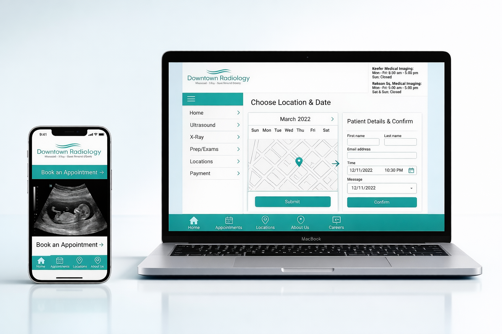
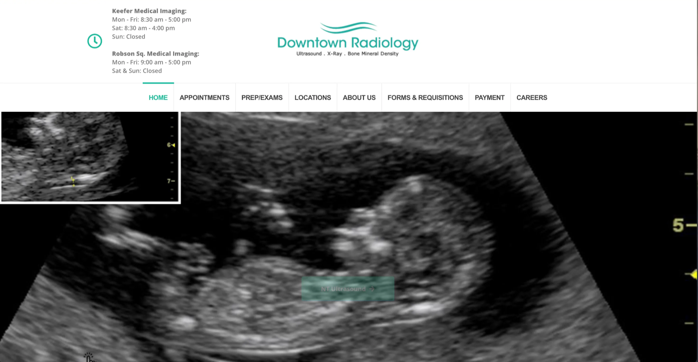
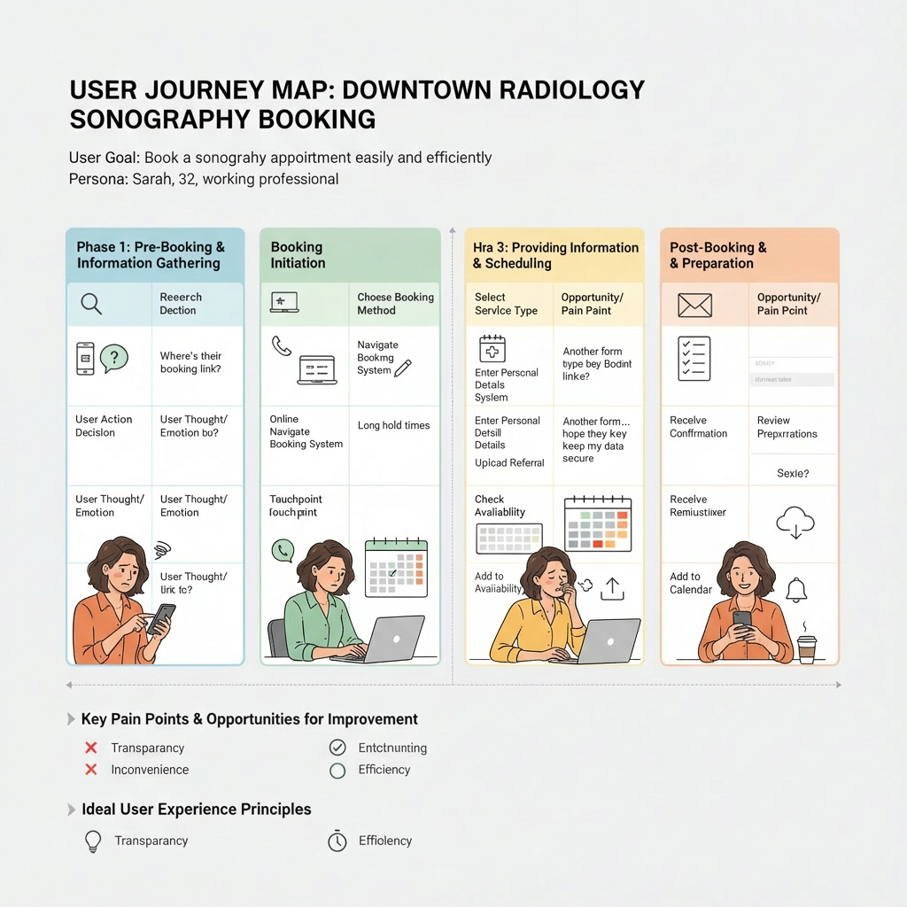
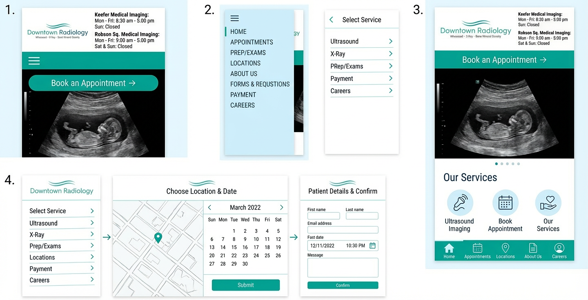
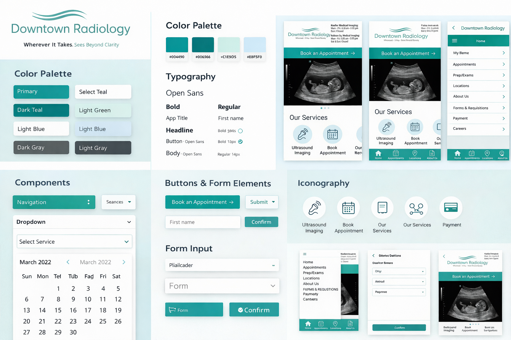
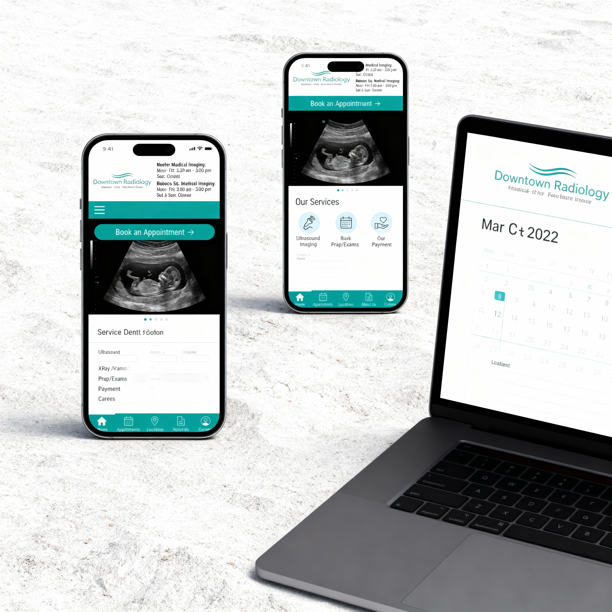

UX/UI Design · Healthcare · Vancouver
Downtown Radiology
Digital Redesign
Human-centered UX research and service design for a clinical booking transformation — modernizing 30 years of phone-and-fax workflows.
40%
Fewer phone calls post-MVP
30yr
Legacy workflow transformed
WCAG
AA accessibility met
00
Project at a Glance
Context
Trusted Vancouver Clinic
A trusted imaging clinic relying on phone and fax booking for over 30 years — ready for a digital-first future.
Challenge
Legacy Workflows
Modernize booking and communication without disrupting established clinical workflows or the clinic's trusted identity.
Approach
Lean, Research-Driven
Staff interviews, patient surveys, persona development, IA restructuring, and benchmarking — all before a single pixel.
Outcome
Live & Shipping
Prototypes moved to phased implementation. Live website deployed with measurable reduction in inbound phone load.
01
The Challenge
The clinic had built years of patient trust through personal, phone-based care — but that same system was creating bottlenecks for staff and friction for patients expecting digital options.
The risk: a poorly executed redesign could alienate long-standing patients, especially seniors, while a conservative approach would fail to reduce operational load.
How can we modernize booking and communication without disrupting established clinical workflows?
Phone & fax only
No digital booking
Trust must be preserved

02
Research & Approach
01
Stakeholder Interviews
Spoke with staff, radiologists, and referring physicians to map constraints and existing workflows.
02
Patient Surveys
Surveyed patients to understand expectations, tech comfort levels, and pain points in the current experience.
03
Persona Development
Defined three key personas: seniors, referring physicians, and walk-in patients — each with distinct needs.
04
Competitive Benchmarking
Analysed healthcare booking systems to identify patterns and accessibility best practices.
05
IA Restructuring
Rebuilt the information architecture to reduce cognitive load and surface the most critical tasks within 2 clicks.
Key personas identified
🧓
Senior Patient
Low tech comfort
Primary needs
Simple, large-text interface
Phone option always visible
No account required to book
👨⚕️
Referring Physician
High task efficiency need
Primary needs
Fast referral upload flow
Clear status visibility
Minimal form fields
🚶
Walk-In Patient
First-time visitor
Primary needs
Hours & location up front
No-referral pathway clear
Preparation instructions visible

03
Design Solutions
Mobile-First Booking Flow
A simple 3-step booking prototype — service selection, time slot, confirmation — designed for all tech comfort levels.
Clear CTA Hierarchy
Three primary actions surfaced immediately: Book · Referral Upload · Location & Hours. Nothing buried.
Service Icons + Prep Guidance
Visual service icons paired with preparation instructions reduce inbound "what do I need to bring?" calls.
Brand-Aligned Visual System
Updated visual materials that preserved the clinic's approachable, trusted identity while introducing modern UI patterns.
Design principles applied
Mobile-First
WCAG AA
2-Click Access
Progressive Disclosure
Trust Preservation
Phased Rollout



04
Outcomes
40%
Reduction in phone calls post-MVP
↑
Staff confidence in digital workflows
AA
WCAG accessibility standards met
✓
Foundation for online booking rollout
Streamlined appointment booking — measurably fewer inbound calls
Improved patient satisfaction with clearer result and service presentation
Enhanced staff efficiency with intuitive internal tools
Prototypes moved to phased implementation — currently live


"
The best healthcare design is invisible — it just works, for everyone, the first time.
Preserved 30 years of patient trust while introducing a fully modern booking experience
Designed for the full patient spectrum — from tech-savvy physicians to seniors with low digital comfort
Laid the operational and UX foundation for a phased digital transformation that is now live